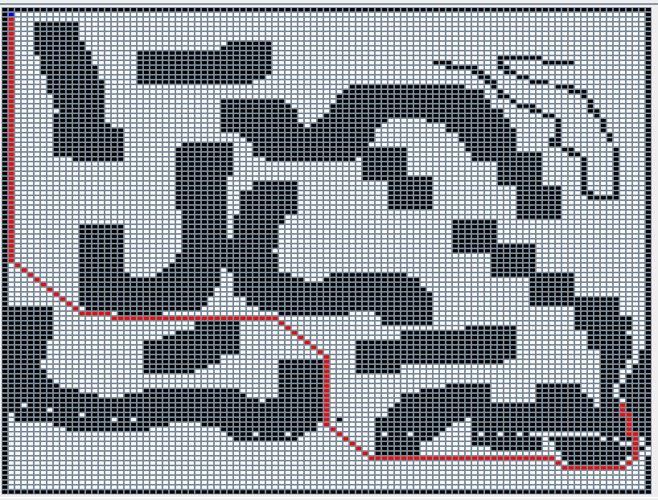

Scout System - Navigation
VISION
Create a system that can navigate autonomously in an unknown environment.GOALS
- Design and build the Navigation Phase in both the entities of the System, assuming a complete defined map
- Study Artificial Intelligence algorithms to define the best path between two given point
- Create a reactive navigation plan that can be interpreted and executed by an autonomous agent
- Design and build a simulated and/or concrete autonomous agent.
WORK TO DO
- Build the Navigation Model of the of the Robot.
- Build the Navigation Model of the Console.
- Testing the components (unit testing).
- Define a valid algorithm to compute the navigation plan.
- Define a proper way to express the plan statements
- Build a simulated system and test it
- Build a concrete system and test it
Robot Analysis
Robot Model - Structure
Name: RobotContext: ctxRobot
The Robot is a composed entity that can navigate autonomously in the environment;
It's based on Raspberry Pi technology and equipped with sensor and motor, based on the DDR architecture:
- Two DC Motors, that allow the Robot to move in the environment, do strict curves and change his speed;
- Sonar sensor, allow the Robot to sense objects in front of him;
- Navigate from a START point to a GOAL point;
- Abort the Navigation in every moment;
- Autonomously avoid unexpected obstacles.
Robot Model - Behavior
Assumption 0: Robot start position is exactly the user defined START POSITION, Robot start direction is the Map NORTH.
- At the Beginning of the Navigation phase the Robot waits the Navigation Data (Plan and START position) from the Console;
- When it received the Data, it convert them in a runnable and complete Plan;
- Then it runs the Navigation Plan:
- Before each forward movement, it check the presence of unexpected obstacles;
- If it find and obstacle, it waits a defined timeout.
If the object is still there, it sends the current position and the new obstacle position to Console,
then wait the new Navigation Data,
create the new Plan and run it. - Before every move it update it's current position or direction.
- When it reaches the GOAL, it sends a notification to the Console.
Console Analysis
Console Model - Structure
Name: ConsoleContext: ctxConsole
The Console is an atomic entity able to interact with the User and equipped with better computational capabilities.
To handle that tasks, It must be implemented on a desktop or mobile architecture and show an appropriate GUI. The Console offers a limited set of features:
- Load an Environment map and show it on GUI;
- Compute the best path from a START to a GOAL point (selected by the User), and show it on GUI;
- Start the Robot Navigation;
- Abort the Navigation in every moment.
Robot Model - Behavior
- At the Beginning of the Navigation phase the Console waits that the user selects the Map file;
- When it received the file, it loads the Map and show it on GUI;
- the user selects START and GOAL point;
- Then trigger the Search of the Best path;
- When user decide to start the Navigation, the Console send the Navigation Data to the Robot.
During the Navigation can happen that:- In Every moment the User can abort the Navigation, so Console have to transmit this command to Robot
- If Robot find an unexpected obstacle it sends it's current position and the new obstacle position,
so Console have to compute the new best path to GOAL point, and send it to Robot; - Robot reach GOAL and navigation ends.
Interaction
I prefer to analyze both the entities in the same paragraph.
In this section i have to choose the type and format of data transmitted between Robot and Console.
-
local_gui_command : local_gui_command(COMMAND), this event is emitted by the GUI on user interaction, Console sense this event in order to handle the user interaction.
The payload COMMAND can be:
- loadmap ( PATH ),
where PATH is the absolute filepath of the map file; - findpath ( START , GOAL),
START and GOAL are in the format position(X,Y); - navigate(MODE),
to start the Robot navigation. Mode can be simulated or robot. - abort,
to stop the Robot Navigation; - clearpath,
to clear an already showed path and repeart the process.
- loadmap ( PATH ),
-
navigate : navigate( PLAN_MOVES , POS ), this message is send from the Console to the Robot to transmit the navigation data (before and during the Navigation, if is needed).
I prefer the message form because Console perfectly knows the receiver of the data, furthermore a message is safer than an event, and i don't want to lose those data.
This message also command the start of the Robot Navigation.- POS is the same of START and GOAL, position(X,Y);
-
PLAN_MOVES is more complex. Since a plan can be very long I prefer to encode possible moves in a very short codification.
So i assume that a robot can only execute 3 kind of moves:-
move forward of a defined distance. this is encoded with t if the move is parallel to X or Y axis, or d if the move is diagonal.
diagonal is different by horizontal or vertical move because the diagonal of a square is longer than the side, so the Robot has to increase the move forward distance. - turn left of 45°, this is encoded with l;
- turn right of 45°, this is encoded with r;
-
move forward of a defined distance. this is encoded with t if the move is parallel to X or Y axis, or d if the move is diagonal.
-
navigatefile : navigatefile( PLAN_MOVES , POS , FILENAME), as the previous message, is starts the navigation from the POS point followuing the PLAN_MOVES plan. It also provides the map FILEMANE usefull during simulated Navigation;
-
obstaclefront : obstaclefront is the event emitted by Sonar when it detect a frontal obstacle in the sensing distance, the Robot may listen or not this event;
-
update : update(OBJECT, CURRENT), is an event emitted by Robot and sensed by Console. It is used to request a new plan when an unexpected obstacle is detected.
OBJECT and CURRENT are in the format position ( X , Y );
-
abort : abort, is an event emitted by Console and sensed by Robot, it's used to abort the Navigation;
-
end : end, is and event emitted by Robot when it reach the GOAL.
The same applies to abort, maybe i have multiple robots.
QActor Models & Prolog Theory
Console Model ----> console.qa
Console Prolog Theory ----> consoleTheory.pl
Robot Model ----> robot.ddr
Robot Prolog Theory ----> robotTheory.pl
Navigation Problem Analysis
As I said in the home page, I delegate the task to compute the best path to the Console,
so Robot is just an executor, something that receive a sequence of command and simply execute them (this is very very similar to ButtonLedSystem).
Since Console compute the path isn't necessary to transmit the Map to the Robot, it only needs path and start position (to dynamically compute the current position).
Anyhow, i assume that:
Assumption 1: The map is divided in squared cells of uniform size. The size of a cell is based on robot dimensions. Consequently, the navigation is discrete.
The map has a maximum width and height and must be bounded by obstacles borders.
Detect Obstacles
In Order to detect unexpected obstacles Robot can use the Frontal Sonar.
The problem is when be sensitive.
Assumption 2: Robot can only step forward of a defined distance, or turn left/right of a defined angle.
During a rotation the Robot position doesn't change, so it can find an unexpected obstacle only during a step forward.
There are a lot of available techniques, i decide to adopt a pessimistic one:
The detection distance of Sonar is equal to step distance, before every forward movement Robot listen to Sonar to know if the next cell is clear.
This solution is a bit pessimistic but very simple to implement ad also is the normal behavior of an intelligent agent.
Handle dynamic obstacles
The requirements sais that:During the navigation we assume that the plan is dynamic so, the Robot must detect unexpected obstacles.
When an unexpected obstacle is found:
- The Robot stops and waits a defined time.
- After that, if the obstacle is still there, the Robot must generate an alternative plan for the current position to GOAL, that avoid the new obstacle.
Compute The best Path
There are a lot of way to make a Planner, but in my first implementation, I don't strictly make a Planner.
First of all, a little summary about what a Plan is in this context:
Whit Plan I mean a finite sequence of actions, in this case move action, to reach a defined purpose (the GOAL).
In this domain, the Robot can:
- move forward of his lenght
- turn right of 45°
- turn left of 45°
This Plan must be the best possible, according with the environment description.
My planner is not a usually known Planner, it's nothing more than an A* search algorithm, applied on the map environment.
Search Algorithm
A* search algorithm is an artificial intelligence algorithm, used to find a precise state in a state graph.This graph (or sometimes tree) is usually dynamically generated during the search based on domain description. More info here.
A* Search
The A* Search Algorithm is a basic informed algorithm that consider both distance from GOAL and the heuristic cost to reach the state.At each search loop it consider as the current state to explore, the state that minimize the sum of those values.
With this technique it can understand if a path is useless or if there is a shortest path to reach GOAL.
To implement this algorithm there are 3 things to define:
- How the environment is represented? ---> Map Description ;
- Which moves are possible? ---> Move Description
- How to Compute the Distance from Goal? ---> Heuristic
More info here.
Map Description
The Map model is the same of the Exploration phaseMove Description and Cost
In a search algorithm we can think at a cell like a node of the search graph, each cell is a different state, the purpose of the planner is to find the GOAL state.
To change the current state it needs a way to moves between cells. The description of move is very important in order to improve the performances of agent.
In a first implementation i used a description like this:
A Robot in a certain state can:
- Move forward (horizontal or vertical) in the next cell. It costs 10;
- Move forward (diagonal) in the next cell. It costs 15;
- Turn right or left on itself to 45°. It Costs 10;
- Turn right or left on itself to 90°. It Costs 20;
But there is a lot of problems.
- For each graph node, I have to store the Robot current direction;
- Know where i can go based on the direction is very expensive;
- More important, for each map position i have 8 stacked nodes, one for each cardinal direction.
Also that nodes have always the same distance from GOAL position, so the only way to know if the direction is wrong is to wait that the cost increases, and this is very very slow.
So I prefer to use a more classical model:
- Each state is defined as only X and Y coordinates;
- At each state, the Robot can move to one of the adjacent cell;
- This movement is atomic, also if include rotation;
- Move horizontal and vertical cost 10;
- Move diagonal cost 15;
Heuristic
The Heuristic is a function that compute how a node of the graph is "good".The heuristic function must be admissible, meaning that it never overestimates the actual cost to get to the GOAL node.
In this domain the heuristic is the Manhattan distance between current state and GOAL state.
Distance = | goalX - currentX | + | goalY - currentY |
More info here.
Examples
As you can see in the image, the algorithm find the best path from top left corner in 3848 ms.
Next Work
The A* search is good but absolutely not scalable (over 200x200 cells the computation time drastically increase);Also I works on a very simple world, with a lots of assumptions, for example the real world is not discrete.
So I'm moving in two different ways:
- Implement a better type of A* search, called Jump Point Search
- Implement a usually known Planner, in particular a Conditional Planner